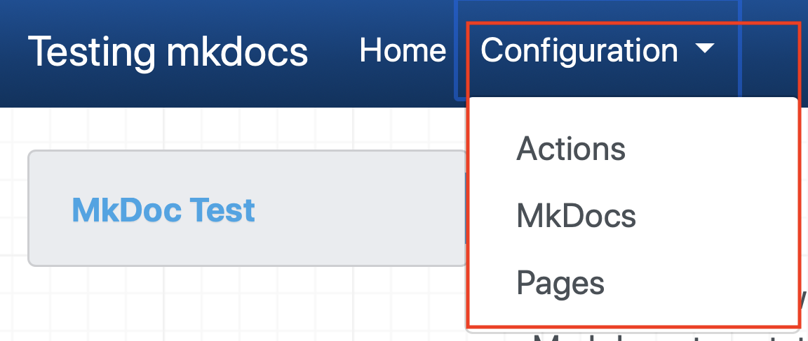

MkDocs¶
MkDocs is an open source project that takes Markdown documents and generates a static web site. The static web site does have some useful features, such as navigation and search.
MkDocs is easy to install on all common operating systems and provides a good developer experience, where you can see real time changes as you work on a document.
You also have multiple built-in or community themes available and have the option to customize an existing theme or create a new theme the get the documentation layout and style exactly as you want. For this project the default theme is used.
Installing MkDocs¶
Before you can use MkDocs you need to install it. The documentation provides instructions for installation of the python 3 prerequisites and MkDocs
This project uses some additional plugins and extensions to the core MkDocs, which are discussed later in this section. You also need to install the extensions and their prerequisites if you want to use the additional features.
Configuring MkDocs¶
MkDocs is configured using a file named mkdocs.yml located in the root directory of your project. The minimum configuration is simply a site name.
site_name: Testing mkdocs
site_description: >-
Automatically create formatted documentation from Markdown files in a GitHub repository.
The Markdown is automatically formatted using Docs, generated when a GitHub pull request or push
is made to the repository using GitHub Actions and hosted on GitHub Pages.
site_url: https://binnes.github.io/mkdocTest
site_author: Brian Innes
repo_name: binnes/mkdocTest
repo_url: https://github.com/binnes/mkdocTest
edit_uri: ""
use_directory_urls: false
theme:
name: material
plugins:
- search
- with-pdf:
cover_subtitle: Workshop documentation from Markdown
output_path: pdf/mkdocs.pdf
markdown_extensions:
- attr_list
- admonition
- toc:
permalink: true
extra_css:
- css/extra.css
- css/pdf-print.css
nav:
- Home: index.md
- Actions: GitHubActions.md
- MkDocs: MkDocs.md
- Pages: GitHubPages.md
google_analytics:
- 'UA-172132667-1'
- 'binnes.github.io/mkdocTest'
You can see all the configuration options in the MkDocs User Guide, but some things to note:
- The site_name is a mandatory field and is used as the title for the site.
- The site_description field provides the description header metadata, which is used by a number of tools to summarise the content of a site
- The default location MkDocs looks for docs to render is the docs directory in the root of your project. This can be changed by adding the docs_dir configuration option.
- The default location MkDocs will write the rendered site is the site directory. This can be changed by adding the site_dir configuration option.
- MkDocs automatically adds the search plugin to generate a search capability on a generated site, but it must be specified when adding a plugins section to use additional plugins
- The default theme is mkdocs, but this can be altered using the theme configuration options.
- The attr_list Markdown extension has been enabled to allow additional HTML attributes to be added to markdown. This is used to allow links to be opened in a new tab or window rather than leaving the site by adding the target attribute. So the Markdown for the link in this section is specified in Markdown as :
[additional HTML attributes](https://python-markdown.github.io/extensions/attr_list/){target=_blank} - You control the navigation options of the published site using the nav configuration option.
- MkDocs is enabled for Google Analytics, simply specify your details to start collecting data on a site.
This project is using GitHub Actions to generate the site, so the site directory shouldn't be pushed manually into the GitHub repository, so this project has added the site/ directory to the .gitignore file, to prevent it being added to the repository.
Controlling site navigation¶
The nav configuration controls the navigation on the site. Different themes can support different levels of navigation nesting and offer different navigation options on the page.
You can control the navigation nesting by adding a section in the configuration. If I changed the navigation for this project to:
nav:
- Home: index.md
- Configuration:
- Actions: GitHubActions.md
- MkDocs: MkDocs.md
- Pages: GitHubPages.md
the navigation now shows the top level Configuration option as a drop down list containing the 3 sub-level entries.

Publishing the site¶
MkDocs has a built in option for deploying to GitHub Pages.
The default option is to push the generated site to a branch in the GitHub repository called gh-pages. This default can be changed using the remote_branch configuration option.
As this project uses a GitHub Action to automatically publish the site when changes are pushed to the master branch it shouldn't be necessary to publish manually.
To manually publish documentation to GitHub Pages:
- Open a terminal window
- Navigate to the root directory of your cloned GitHub repository
- Run the mkdocs command:
mkdocs gh-deploy
Options for customisation¶
MkDocs works pretty well with the default theme and configuration, but it is possible to change the styling and functionality of the generated site or add more complex Markdown formatting options.
Options for changing the generated site look and feel¶
The default mkdocs and readthedocs themes provide good options for the layout, navigation and style of the generated site, but the community provided themes offer additional options. This site is using the Material theme from the community.
Using a community theme is usually pretty easy:
- install the theme - this is usually done using the pip package manager e.g.
pip install mkdocs-material -
configure mkdocs.yml to set the theme e.g.
yaml theme: name: material
However if none of the provided themes are exactly what is needed then there are 2 options:
- Customise an existing theme - which is documented in the MkDocs user guide
- Generate your own custom theme - which is also documented in the MkDocs user guide
Note
If you choose a community theme or generate your own theme, then you might need to modify the Dockerfile for the GitHub Action if additional packages are needed for the theme.
Markdown extensions¶
MkDocs uses Python Markdown to translate the Markdown files into HTML, which supports extensions. You can modify the default set of extensions that MkDocs uses to add support for additional Markdown features using the markdown_extensions configuration options in the mkdocs.yml configuration file.
This project has the attr_list extension enabled to allow additional HTML attributes to be added when formatting pages. In this project it is primarily used to add the target attributes to external links. An additional use is to resize an image by specifying a width tag {width=600}
Note
MkDocs supports HTML attributes, but if you want to generate a pdf of the site, then you need to avoid HTML attributes and use CSS to control presentation. So the {width=600} HTML attribute should be rewritten to use CSS, so becomes {style="width: 600"}
If you choose add a Markdown extension, then you may need to modify the Dockerfile for the GitHub Action to ensure the extension is installed. The officially supported extensions are usually installed by default, but third party extensions will need to be installed so they are available when the action is run to generate the site.
Example of customisation¶
Adding the attr_list extension we can alter the appearance of images.
Warning
The additional markup used for formatting by Markdown extensions will not be rendered by the GitHub Markdown renderer. The extended Markdown will appear on pages viewed through the GitHub repository pages.
The Markdown  will generate the image below:

However, you may want to change the size of the image, so we can use any of the CSS options for specifying a size (px, em, rem, %, ...). The following will make the image 50% of the width of the column containing the image: {style="width: 50%"} which produces the following output:
You can also add additional styles to an element, so to centre the above image the following can be used: {style="width: 50%; display: block; margin: 0 auto;"}
which creates the following:
Note
You can combine customising the style using additional CSS with the attr_list plugin to create a custom style to apply to Markdown. If the theme provides a suitable style then you can also use it rather than defining a new custom style where appropriate.
If I create a file within a css folder inside the docs folder called extra.css containing:
img.center {
display: block;
margin: 0 auto;
}
and configure MkDocs to use that file by adding the extra_css configuration to the mkdocs.yml configuration file, then I can just apply the class to the image: {style="width: 50%" .center} which produces the same output as using the style attribute above.
You may also have noticed the Note section above. This is created using the admonition Markdown extension and the following Markdown text:
!!! note
You can combine customising the style using additional CSS with the attr_list plugin to create a custom style to apply to Markdown. If the theme provides a suitable style then you can also use it rather than defining a new custom style where appropriate.
The default mkdocs theme supports admonition tags of note, warning and danger. You can add additional tags by creating custom CSS in the extra.css file.
Plugins¶
Plugins provide more advanced customisation within MkDocs, such as providing the search capability within the generated static site. You can create your own plugins or use one of the community provided plugins to add additional capability to the generated site.
Again any plugins used in a site will need to be installed, so the Docker file for the GitHub Action will need to be modified to ensure all plugins are available when the action runs to generate the site.
Generating PDF documentation for your site¶
In additional to a static web site, MkDocs can also generate a PDF file containing all the documents in the site combined into a single PDF. To do this you need to use a plugin. There are a number of plugins available that will generate a pdf, but the one I use is called MkDocs with pdf. Before you can use it you need to install it along with the prerequisites. The installation is documented in the plugin project README file.
Once the plugin is installed it can be added to the MkDocs configuration file, in the plugin section:
plugins:
- search
- with-pdf:
cover_subtitle: Workshop documentation from Markdown
output_path: pdf/mkdocs.pdf
Note
You need to add the search plugin when adding the plugins section. The search plugin is added by default if no plugins section is added, but needs to be manually added when a plugins section is created in the configuration file.
You will see there is an option to provide a subtitle to be placed on the cover page.
Once the plugin has been added to the MkDocs config file it will be run when a mkdocs build command is issued, so each time the static HTML site is built then a new pdf will be created. When using mkdocs serve the pdf will not be built.
The default location for the pdf is within the site folder. A new folder named pdf is create and the pdf file is named document.pdf. These defaults can be modified by providing the output_path configuration property.
The Material theme automatically adds a link to the generated pdf at the bottom of each page of the static website. If you're reading this served from GitHub pages, then check the bottom of this page to see the link to the pdf version of this documentation.
Explicitly define all Markdown pages¶
When generating a pdf, you need to place all Markdown documents you want included in the pdf in the navigation configuration within the mkdocs.yaml configuration file.
When generating a static site MkDocs will include Markdown pages that are not specified in the site navigation, so long as they are linked to by a page defined in the navigation.
However, a pdf document needs to have everything explicitly declared as it specifies the order in which the Markdown pages appear in the pdf. Any page not explicitly declared within the nav configuration will not be included in the pdf, so any links to those pages will not work in the pdf.
A common approach to include content which would otherwise not appear in the site navigation is to have an Appendix or Additional Resources section at the end of the pdf.